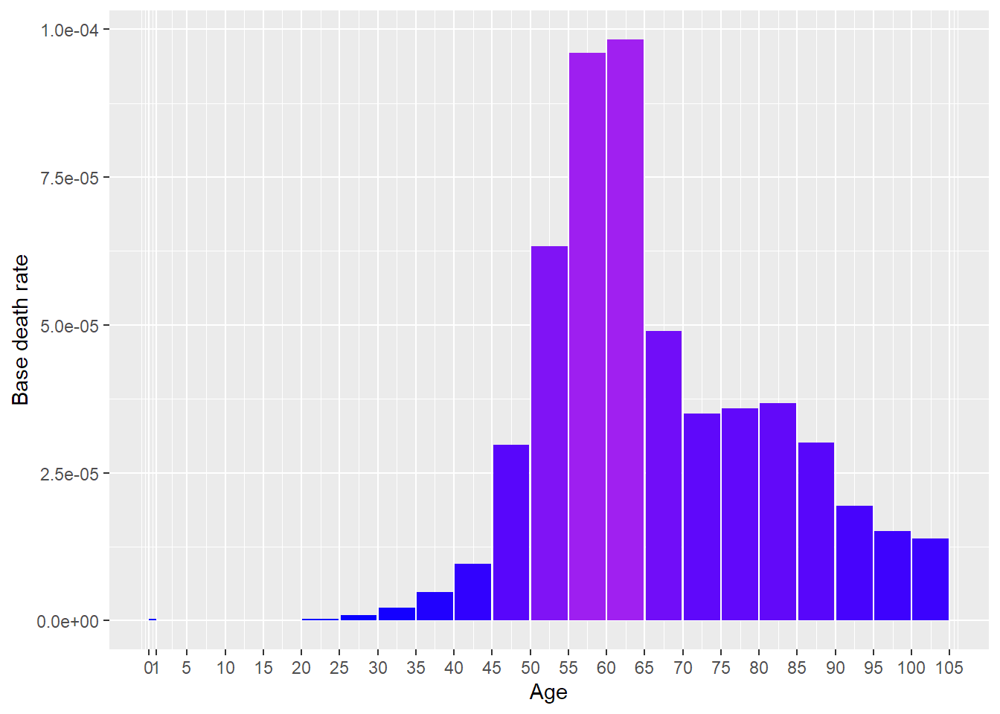
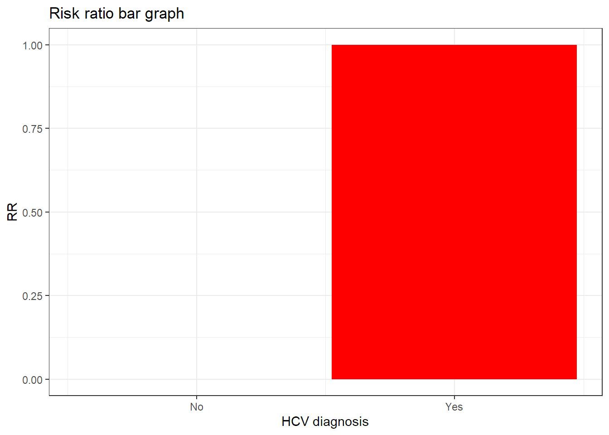

[auto-generated file]
Hepatitis is a death cause. It means that there is a certain probability that one dies from this.
In 2014 Hepatitis was responsible for 0.308% of the deaths in the US. Below is a plot of how prevalent the death was for different ages (Xu et al. 2016)

The definition of dying from Hepatitis is to get any of the following ICD codes as the main cause of death on one’s death certificate. The percentage is the proportion of the deaths from Hepatitis who falls under the ICD code
The combined risk ratio of all risk factors is computed using the formula
\[ RR=RR_{\text{HCV}} \]
The normalization factor is based on the joint distribution of all the risk factors and is computed using the formula
\[ P=P_{\text{HCV}} \]
HCV diagnosis is a risk factor for Hepatitis.
Below is a plot of the risk ratios we have taken from the literature alterated to fit our model

“ICD Order Files 2014.” n.d. https://www.cdc.gov/nchs/icd/icd10cm.htm.
Xu, Jiaquan, Kenneth D Kochanek, Sherry L Murphy, and Betzaida Tejada-Vera. 2016. “Deaths: Final Data for 2014.” National Vital Statistics Reports 65 (4).